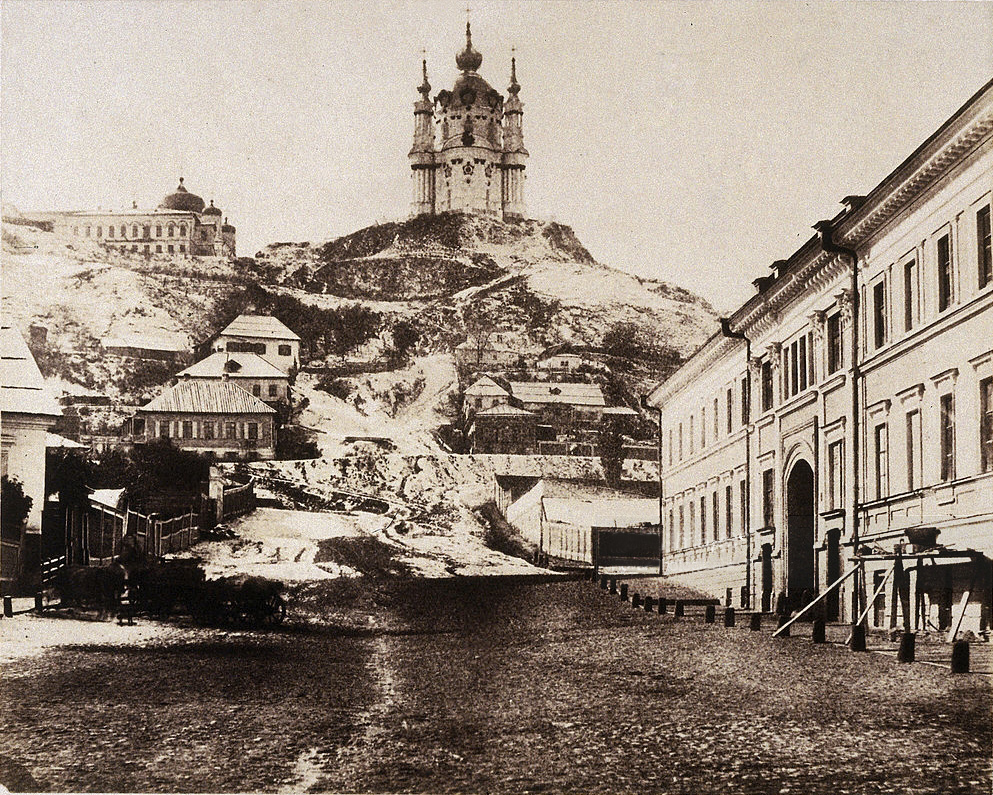

Андріївська церква

Розташування
Андріївська церква розташована на крутому правому березі Дніпра, на Андріївській горі, східніше Старокиївської гори, над Подолом. Вниз від неї йде Андріївський узвіз, який з'єднує верхнє місто з нижнім.
Історія
Вже у
1215 році на місці сучасної Андріївської церкви була побудована Хрестовоздвиженська церква, яка
проіснувала до початку XVII ст. Згодом на її місці була споруджена дерев'яна церква, що згоріла під час
пожежі в кінці XVII ст.

Андріївська церква збудована у 1747–1762 роках за проєктом архітектора Франческо Бартоломео Растреллі на
Андріївській горі в пам'ять відвідин Києва імператрицею Єлизаветою Петрівною, на місці
Хрестовоздвиженської церкви. Крім цієї роботи, в Києві є ще одна споруда авторства Ф.-Б. Растреллі —
Маріїнський палац. Церква повинна була стати палацовою.
Над оформленням церкви працювали художники: І. Роменський, Іван Чайковський, Іван Вишняков з учнями, та
Олексій Антропов, який розписав катедру, купол, декілька ікон іконостасу («Тайна Вечеря»,
«Благовіщення», «Успіння Богородиці», «Апостол Андрій Первозванний») та образів у вівтарі. Будівельними
роботами керував московський архітектор Іван Мічурін.
Андріївська церква
Протоієрей Андріївського собору отець Микола Капшученко, 08.04.1957
На будівництво церкви витратили 23 500 штук цегли, 28 970 пудів цвяхів; на позолоту верхів — 1590 книжок
і 20 аркушів листового золота. 1767 року Андріївська церква була освячена, а 1768 року її було
передано Київському магістрату, пізніше — Київській міській думі. Під час ремонту 1785—1786 років, було
замінено покрівлю основного об'єму з темно-зеленої полив'яної дахівки на бляху.
Андріївська церква була діючою до 1932 року, коли за рішенням радянського уряду в ній було припинено
богослужіння. У 1935 році церква на правах філії увійшла до складу історико-культурного заповідника
«Всеукраїнське музейне містечко». У 1939 році в ній розміщується філія Софійського антирелігійного
музею. В роки Другої світової війни в Андріївській церкві були поновлені богослужіння.
1961 року церкву знову закривають для богослужінь. 10 липня 1962 року Андріївську церкву було передано
на баланс Держбуду УРСР, 10 січня 1968 року — Державному архітектурно-історичному заповіднику
«Софійський музей». 10 вересня 1968 року Андріївська церква відкривається як архітектурно-історичний
музей-філія заповідника.
З 1949 по 1954 роки було проведено реконструкцію церкви, під час якої відремонтовано конструкції дахів,
ушкоджену кладку стін, замінено покрівлю дахів та покриття паперті. Тоді ж біля південної стіни
підкліта, уздовж сходів, зведено одноповерхову прибудову за планом архітектора Миколи Дьоміна. Одночасно
 здійснено консервацію живопису церкви під керівництвом Федора Демидчука. До підкліта церкви було
підведено водогін та каналізацію, У 1965—1967 роках в Андріївській церкві було виконано роботи з
укріплення цегляної кладки фасадів підкліта, його підпірну стіни було перекладено, ремонту покриття
паперті, конструкцій даху та покрівлі церкви. Автором проєкту реставрації була
архітекторка-реставраторка Валентина Корнєєва. Також було продовжено консервацію живопису під
керівництвом Павла Войтка.
У 1974–1987 роках була проведена повна реставрація церкви на підставі виявлених у графічному зібранні
віденського музею «Альбертіна» копій авторських креслень Б.-Ф. Растреллі.
З 1987 року вона входить до складу Національного заповідника «Софія Київська».
У 2001—2016 роках в Андріївській церкві проходили богослужіння Української автокефальної православної
церкви.
Напередодні проведення Євро-2012 були проведені роботи по зміцненню схилу, на якому розташована церква,
та реконструкція дороги Андріївського узвозу.
18 жовтня 2018 року церква була передана Вселенському Патріархату, на території якої була створена
ставропігія в Києві. 13 грудня на свято апостола Андрія того ж року в Андріївській церкві відбулася
перша архиєрейська літургія Патріаршої Ставропігії Константинопольської православної церкви.
здійснено консервацію живопису церкви під керівництвом Федора Демидчука. До підкліта церкви було
підведено водогін та каналізацію, У 1965—1967 роках в Андріївській церкві було виконано роботи з
укріплення цегляної кладки фасадів підкліта, його підпірну стіни було перекладено, ремонту покриття
паперті, конструкцій даху та покрівлі церкви. Автором проєкту реставрації була
архітекторка-реставраторка Валентина Корнєєва. Також було продовжено консервацію живопису під
керівництвом Павла Войтка.
У 1974–1987 роках була проведена повна реставрація церкви на підставі виявлених у графічному зібранні
віденського музею «Альбертіна» копій авторських креслень Б.-Ф. Растреллі.
З 1987 року вона входить до складу Національного заповідника «Софія Київська».
У 2001—2016 роках в Андріївській церкві проходили богослужіння Української автокефальної православної
церкви.
Напередодні проведення Євро-2012 були проведені роботи по зміцненню схилу, на якому розташована церква,
та реконструкція дороги Андріївського узвозу.
18 жовтня 2018 року церква була передана Вселенському Патріархату, на території якої була створена
ставропігія в Києві. 13 грудня на свято апостола Андрія того ж року в Андріївській церкві відбулася
перша архиєрейська літургія Патріаршої Ставропігії Константинопольської православної церкви.
Архітектура
Будівля церкви однокупольна з п'ятибанним завершенням має форму хреста (31,5–22,7 м), у кутах якого
розміщені декоративні вежі на масивних стовпах, що відіграють роль своєрідних контрфорсів. Зовні
контрфорси прикрашені пілястрами й прикриті трьома парами колон з капітелями коринфського ордеру. Висота
церкви — 46 м, з хрестом — 50 м (з підклітом — 64 м); довжина — 30 м, ширина — 23 м.
До церкви, з боку вулиці, ведуть круті чавунні сходи.
 Уся маса церкви спирається на двоповерховий будинок-підкліт з 8 кімнатами на кожному поверсі, стіни
якого являють собою фундаменти церкви.
Навколо церкви — балюстрада, з якої відкривається мальовнича панорама Подолу та Дніпра.
Уся маса церкви спирається на двоповерховий будинок-підкліт з 8 кімнатами на кожному поверсі, стіни
якого являють собою фундаменти церкви.
Навколо церкви — балюстрада, з якої відкривається мальовнича панорама Подолу та Дніпра.
Інтер'єр
Характерною ознакою інтер'єру Андріївської церкви є її невеликий об'єм та відсутність хорів. Внутрішнє оздоблення церкви, розроблене Ф.-Б.Растреллі, ближче до стилю бароко. Воно було виконане українськими майстрами Михайлом Чвіткою, Яковом Шевлицьким, Василем Клецковським, Григорієм Левицьким, московськими І. та В. Зиміними, П. Ржевським та інших. Іконостас церкви оздоблено різьбленим позолоченим орнаментом, скульптурою й живописом, який створений з 1754 по 1761 рік. Різьблені деталі іконостасу, за ескізами та малюнками Ф.-Б. Растреллі, створили майстри Йосип Домаш, Андрій Карловський, Матвій Мантуров, Давид Устарс, Христофор Орейдах та Йоган Цунфер, монтувальними роботами керував майстер Йоганн Фрідріх Ґрот. Позолотні роботи виконували Франсуа Лепренс та Іван Євстифеєв. Над живописом іконостасу працювали Іван Вишняков з учнями (Олексій Бєльський, Олексій Поспєлов, Андрій Єрошевський, Петро Семенов, Іван Фірсов), та Олексій Антропов. Антропову належать ікони «Зішестя Святого Духа на апостолів», «Нагорні проповіді Христа» (прикрашають кафедру), композиція «Таємна вечеря» (у вівтарі) та інш. У церкві є полотна «Вибір віри князем Володимиром» латиського художника Йоганна Еґґінка та «Проповідь апостола Андрія» (бл. 1847 р.,) українського художника Патона Бориспольця; живопис у вівтарній частині церкви на зворотній стіні іконостаса створили художники І. Роменський, Іван Чайковський та Григорій Стеценко. У будівництві також брали участь українські майстри каменярі Я. Бублик, Г. Горох, Степан Ковнір, М, Новаківський.
Сучасний стан
Станом на листопад 2017 року Андріївська церква знаходиться на реставрації. 17 жовтня 2018 року Президент України Петро Порошенко вніс на розгляд Верховної Ради України законопроєкт № 9208 про передачу Андріївської церкви в постійне користування Вселенському (Константинопольському) патріарху Варфоломію. 18 жовтня 2018 року Верховна Рада України схвалила передачу Андріївської церкви Вселенському Патріархату (при цьому церква залишається в державній власності). 28 листопада 2018 року Кабінет Міністрів України передав Андріївську церкву в Києві в постійне безоплатне користування Представництву двору Вселенського патріархату в Україні. 13 грудня 2020 року (у день Святого Андрія), після 11 років реставраційних робіт, церква відкрилася. Урочисту літургію провів представник Вселенського Патріарха – митрополит Галльський Еммануїл (Адамакіс) разом з настоятелем храму єпископом Команським Михаїлом (Аніщенком). З 15 грудня 2020 року церква відкрита для всіх охочих.